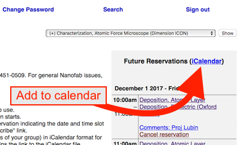

Frequently Asked Questions
Email NanoFab@ece.ucsb.edu to contact all the NanoFab staff – one of us will help you as soon as we can!
General NanoFab Questions
How do I get access to the lab?
See the Services page and click on the appropriate entity (universtiy/company etc.) to see the process and paperwork needed for your staff to access our lab in-person. The hourly rates are also listed on this page. External universities and companies are welcome to access our lab.
Can staff perform fabrication for us?
Yes, for certain types of jobs. See this page for more info.
Who do I contact for an equipment problem or general NanoFab problem?
For general NanoFab issues (that affect the whole NanoFab), please contact the Lab Director (click for contact info) by email or phone.
It's much better to quickly let us know of a mistake or problem proactively, and let us help you fix it!
Emergencies
For immediate or health-related emergencies, call 9-911 from any of the phones in the lab, or 911 from your cell phone. Let them know that you are in "Engineering Sciences Building #225" at "Room #1102 - Gowning Room".
Specific Equipment Problem
Always notify maintainers immediately of any unusual problem that may affect other tool users, and also record it in the logbook!
- If you are having trouble with a piece of equipment, please contact the supervisor of that tool first. The supervisor's contact information can be found posted on the walls above/behind the equipment, on the tool page and on the tool's SignupMonkey page.
- If you need immediate assistance during business hours, you may call/text the tool supervisor's cell phone number, otherwise use their office phone or email.
- If the tool is down, please place a note at the tool in addition to reporting the issue.
- If the engineer is not available, please go to the tool's signup page on SignupMonkey and click the "Report a Tool Issue" button. This emails all Nanofab Staff and all users with future reservations and texts the tool supervisor. This is the preferred method for getting help if the supervisor is not immediately available.
- If the tool is not on SignupMonkey, email the NanoFab Staff at NanoFab@ece.ucsb.edu. This emails all staff, so anyone available can help you.
Contact all NanoFab Staff by Email
The entire NanoFab staff can be emailed at NanoFab@ece.ucsb.edu. This allows any staff member who is able to help to respond in a timely manner. Any problem for which you are unsure who to contact, send it to this email address.
NanoFab On-Call Staff
For after-hours and weekend emergency situations, please call (805) 451-0509 to contact the staff member that is on-call. This is for major issues/emergencies that will affect many users, such as alarms, leaks, wet bench, fume hood issues etc. Please do not call this number for problems with a single process tool that only affects a few users, instead see above.
After Hours Access
To enter the facility after hours, please use the South entrance. There is an iris scanner there for those with iris-enabled access and there is a white card reader for those with card-enabled access.
We DO NOT provide after hours access to the main doors on the West entrance
Publications acknowledging the Nanofab
If you publish on devices or work done using the NanoFab, please add an acknowledgement or line of text stating the following (or similar):
A portion of this work was performed in the UCSB Nanofabrication Facility, an open access laboratory.
This is important for the continued success of the Nanofabrication Facility. This applies to local UCSB researchers as well.
Authorship on Publications
If a UCSB staff member contributed significant research & development effort (including thinking through fabrication methods), or if you include their data/images in your paper, especially if novel work was developed, you should seriously consider adding them as an author. (While also retaining the above Acknowledgement.) Many journals require all contributing authors to be cited. Analysis code authored by staff can be cited if it is on a public repository/online location.
Even for repeat processes performed by our staff, it may be appropriate to include the UCSB Staff member that performed the fabrication - a number of local research groups and companies include the person who fabricated the devices as authors. Since this is research and development, not a guaranteed of-the-shelf product, every run requires = experience to produce good results for your research.
You can specify that the staff member only performed fabrication and process development.
Process knowledge gained from conversations, advice and brainstorming sessions may constitute significant "intellectual contribution", or be worthy of an acknowledgement.
Feel free to contact us if you would like to discuss any of these points, and thank you for understanding.
Bring a new chemical/material into the lab
If you need to bring a new chemical/material into the lab, you must ask before doing so!
Technically, this includes unusual substrate materials. We need to make sure we know how to handle, store and dispose of the material, and confirm compatibility/safety.
Here's what you do:
- Check to see if we stock something similar in our Chemical List. If it's listed there then we have it and you just have to locate it for use. Luis can help you with this.
- Contact Brian Thibeault and let him know that you will be using this chemical (even if it was previously in the lab), to make sure we are ready for it.
- Check to see if we have an MSDS already - if so, we have previously allowed this in the lab: Chemical List
- Make sure you have researched/understand the proper handling and use of this chemical - that is YOUR responsibility!
- See the Lab Rules section about this: Lab Rules: Chemicals in the Nanofab
Can I take supplies from the Nanofab?
Generally NO! The napkins, tote boxes, bottles, flashlights, tools and all other supplies are nanofab property! You are NOT allowed to take any of our supplies to your lab without asking us first. Please do ask staff if there is some supply you'd like to borrow or take, we are usually happy to help.
Where do I get these supplies for my lab?
For UCSB users, the Physics and Chemistry store rooms sell many common supplies we use, including tweezers, beakers/dishes etc. Otherwise you can search any standard supplier for what you need (Thermo-Fischer Scientific, Mcmaster-Carr, Entegris). Just ask NanoFab staff if you need something quickly and we can probably help you, or pass the charge on to your group.
Computer/Tech Questions
How do I get my files from the NanoFab computers?
USB ports are disabled on most NanoFab computers to prevent the spread of viruses.
Instead, you can download your files from our "Nanofiles" SFTP server. As long as you place your files into the proper directory on the tool computer, your files will be synced to the NanoFiles STFP server every hour (or immediately, by running the "Sync to NanoFiles" script). You must save into a folder that is named according to your research group/company's name.
Note that the first time you create a folder for your group on a tool, it will take 24hrs for that tool to show up in your SFTP sessions, and thereafter it will sync every hour.
For further information on how to access these files, where to place your files and login credentials, please
- Log into SignupMonkey
- Click the Files > Request Login Credentials link.
- The email you receive will give you instructions on accessing/syncing to the NanoFiles server, including acceptable folder names you can use on the tool computers.
- You can re-send this email any time by clicking the link on SignupMonkey.
I can't connect to the Nanofiles FTP server!
Symptom: Your SFTP client is suddenly unable to connect to the nanofiles server, with an error like "Network Error: Connection Refused". This may also affect other people on the same network as you (who share the same external IP address.)
Cause:
There are two ways your IP address can be automatically blocked:
- You use the wrong password a few times, or
- Your FTP program tries to make too many connections, so fast that it looks like a DDOS attack and you get blocked. This may happen when you try to download many files at once.
Solutions:
Email nanofabadmin and request that you be unblocked. To prevent this going forward, here are some tips:
- Many FTP clients have the option to use "multiple connections" or "simultaneous downloads". Set it to use maximum 3 connections (which means that you can Browse the folders while downloading two files). Turn off any options that look like they might open more than one connection to the server.
- See these links for limiting the number of connections for Filezilla, WinSCP, CyberDuck.
- WinSCP, in particular (and maybe Filezilla), DEFAULTS to use an unlimited number of connections - so the first time you try to download many files at the same time you will likely get blocked. See the above links to prevent that.
- WinSCP has TWO settings you need to reduce - one under the Bookmark/Connection settings, the other in the main Program Settings/Options. Look carefully for anything that would allow multiple connections or multiple retries and reduce/disable them.
- CyberDuck has a setting for "multiple connections for each download" - make sure to disable this.
- Save your password on your computer with a password manager.
- Your FTP client may also be set to try many "reconnection attempts" very fast. If the saved password is wrong, it will quickly reach the limit of authentication failures, and block your IP. Set your FTP client to never retry on failure, just in case it is due to a bad password.
Wifi Access in the Nanofab
The Wifi networks "UCSB Secure" (preferred) and "UCSB Wireless" (will ask for login every time) and "eduroam" (other educational institutions) have full coverage in the NanoFab. All UC students/employees can use their NetID's to access these networks. External institutions can request a login from Brian Thibeault.
Cell Phone Calls
Verizon Wireless has three cellular repeaters installed in the cleanroom, available via UCSB agreements with the vendor.
Cellular coverage is still not very good in some parts of the lab. However, Wifi Calling (aka. VoIP) works very well if your device is connected to one of the aforementioned Wifi (not cellular) networks. You can set your smartphones to make voice calls over Wifi, as long as your cellular carrier supports this. Then when you initiate the call from a region you intend to work from, your device should automatically choose Wifi calling if it has the best coverage. Calling through your computer (eg. online teleconferencing) will also utilize the Wifi network rather than cellular.
"Wifi calling" is often not enabled by default, enable it as follows:
It is recommended to use the WiFi network "eduroam" for uninterrupted Wifi-Calling performance, although "UCSB Secure" also works.
Forcing Calls to use Wifi (not Cellular)
Sometimes your mobile device continues to use Cellular even though the signal is weaker than Wifi. The following forces your device to use Wifi only, by disabling the Cellular antenna.
- Turn on "Airplane Mode" to disable the main cellular antennas.
- While still in Airplane Mode, enable Wifi, and Bluetooth if using BT headphones.
- Connect to the UCSB Wifi Network, and BT devices if desired.
- Place your call as usual - if WiFi Calling is enabled, the call will use Wifi.
- This applies to using internet calls as well, like WhatsApp, Skype, Facetime, Zoom etc. - your phone may try to use the cellular connection for internet unless you disable it.
- It can take up to 1min after enabling Wifi, for your phone to enable Wifi-Calling. Typically a symbol like "VZW Wi-Fi" or "VoLTE" indicates that Wifi-Calling is enabled.
- When entering or leaving the cleanroom, it may be necessary to dis/reconnect your Wifi antenna in order to enable Wifi-Calling properly, due to your device switching between servers. All antennas in our cleanroom are on a mesh network, for uninterrupted calls throughout the lab.
Can I add equipment reservations to my phone/computer/online calendar?
- Yes, log into SignupMonkey, and on the "Future Reservations" column on the right, click on the "iCalendar" link. This links to a ".ics" file that lists all your upcoming equipment reservations. Open this file to add the reservations to your calendar. Unfortunately deleted reservations will Not be removed from your calendar, because of the difficulty with CalDAV programming. I recommend having a separate calendar that you save your reservations onto.The "iCalendar" (.ics) file link on SignupMonkey
Programatically Accessing Reservation Data
- To get a URL for accessing reservation data using a program, you can simply copy the URL to the *.ics iCal file mentioned above. This URL contains encrypted login info, so returns the *.ics file without requiring the GUI login form. You can get such a URL of your own future reservations as mentioned above. You can also get a custom search (for example all the future/past reservations from your research group) from the "Search" section of Signup Monkey. The results page of any search includes a link at the top for the corresponding iCal file - copy that URL to use in your program/scripts.
Processing/Fabrication Questions
I need help using a tool, where do I get help?
There are so many little details to remember in the cleanroom, we all sometimes forget something or need a reminder. When in doubt, ask for help!
- First, check to see if printed instructions are found at the tool itself.
- Second, check the Wiki page for that tool - many of our instruction sets and user manuals are posted on the Tool page in the Equipment section (see the left side bar).
- Third, during business hours (eg. 7am-5pm) you can contact the tool maintainer. Contact info is posted on the glass walls above each tool.
- Fourth (maybe first) option, look for an experienced user in the lab who might be able to help. Our users are typically very collaborative, knowledgeable and helpful! A senior member of your group is always a good option.
User Manuals
You can find user manuals for many of our tools, and software. Often times these are either
- Printed at the tool itself
- In a PDF on the desktop of the tool's computer
- On the Nanofiles FTP server in the "Manuals" folder. For example, complex analysis software such as the Ellipsometer and AFM manuals are available on Nanofiles FTP.
Where do I find a recipe for a process (litho/etch/dep etc.)?
The "Recipes and Data" section on the left sidebar lists the different categories of recipes. In those pages, you can see whether a recipe exists for your process, and on which tool. We often include some basic characterization data on the recipes, but you should note that these are approximate only. If you have tight tolerances, you need to characterize the recipe yourself (ie. figure out deposition/etch rate, selectivity, verticality etc.).
For some recipes (etches in particular), we often post the parameter variations/recipe characterizations to show you how different recipe variables affect the etch. If you find that a provided recipe isn't exactly what you need, you can use this information to modify a copy of the recipe to suit your own needs. Please refer to the tool owner for creating your own recipes on each tool, especially for those that have a limited number of saved recipe slots.
Many datasheets provide very usedul process info. For example, the datasheets for lithography photoresists/developers and solvents usually show spin curves (thickness vs. spin speed), exposure dose, bake times, resist profile vs. reflow temp etc.
You can find photolithography datasheets on the Chemical Datasheets section of the Lithography Recipes page.
A recipe is indicated as "A", Available, where do I find info on this recipe?
If a recipe is marked as "A", Available on one of the recipe tables, this usually means that a graduate student has done this process at some point, but the NanoFab hasn't necessarily verified the process nor has the exact recipe and characterization. Contact anyone in the Process Group to get in contact with the research group that developed the recipe.
My Glassware/supplies are missing, how do I get them back?
Staff will occasionally collect glassware and supplies that are left out on the bench, after ensuring that the users (as indicated by the glassware labels) are not in the lab. The collected supplies are stored in a locked cabinet in Chase 4.
Any staff can return your glassware - ask any staff to return your glassware. Staff will record the date/time of the collection, and your group may potentially be charged for the staff time.
Please see the full policy here:
Lab Rules > Glassware Confiscation Policy
Wiki Questions
NanoFab users are highly encouraged to contribute their own work, characterizations and corrections to our Wiki! Read on to learn how to do this.
How do I get a login to the wiki?
If you have an active SignupMonkey login, then you can create a Wiki login yourself.
- Just click the "Create an Account" link in the corner of the page,
- Fill in your info, making sure you use the same email address you use for SignupMonkey.
- Then click the link in the confirmation email you receive.
- You will then be able to log in and edit many of the wiki pages. We encourage you to make updates or add your processes!
Contact the Wiki Admin if you need help.
How do I edit a page?
First, you need to login by clicking the “Log In” link in the top-right corner of the page.
Then you simply click [Edit] on a page you wish to change. The [Edit] option will only be available for pages that you are authorized to change, which does not include all pages.
[Edit] brings up the Visual Editor, which allows you to type directly into a page without editing any code, like using a regular word processing program. The Visual Editor is the recommended method. Alternatively, [Edit Source] will show you the wiki markup code for the page, which is also an acceptable way to edit a page but much less intuitive.
Please see the Editing Tutorials for more information on editing a page.
Note that NanoFab users are only allowed to edit certain pages, and have some restrictions on their accounts for security purposes. However we do encourage all updates and changes, so please contact the Wiki Admin if you need help, such as making a new page, uploading images etc. The giant materials/recipe tables are only editable by Admins, so let us know if you have a new recipe/material to add!
"Something went wrong" while saving my edits! How do I keep my edits?
Sometimes the server will log you out after a long time, even while you are still editing a page!
Then when you try to save the page you might get an error like "Something Went Wrong: We could not save your edits because the session is no longer valid...".
If this happens, DO NOT CLOSE your edited page or you may lose your edits! Instead do the following:
- Hit "Resume editing" on the edited page, to close the "Save Page" dialogue.
- Open a NEW web browser window,
- Go to the NanoFab wiki in that new window,
- Login to the wiki on that window (you can click the link to go to the Login page directly)
- On your edited page, Click "Save Page" again, and after dismissing the error click "Try Again". You may need to press Try Again a few times until it figures out that you have logged in, and it will then save your edits.
What do I do if I find an error on the wiki?
If you locate a mistake, error or typo, log in and make the change yourself. Staff will see your edits and approve them.
If you don't have edit permission, let Demis know about the change you wish to make.
Why aren't my edits showing up?
While lab users are allowed to edit the wiki, all those edits will be approved by a staff member before going live.